El Quilmes Rock es, junto al Cosquín Rock y el Rock en Baradero, uno de los festivales de música más importantes de Argentina. Desde su primera edición, ha reunido a miles de fanáticos y a las bandas más destacadas del rock nacional e internacional. Cada año que se realiza, el evento se convierte en una verdadera fiesta donde la música, la historia y la pasión se encuentran en un mismo lugar.
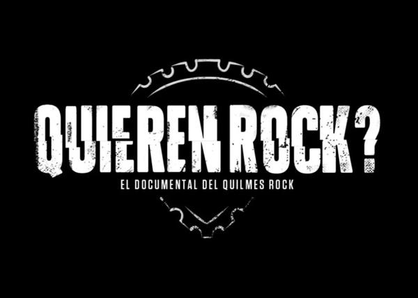
Historia
Este festival es celebrado anualmente en Tecnopolis.(ir a mapa). Este evento lleva el nombre de su principal patrocinador, la cerveza Quilmes, y ha sido un escenario destacado para la música rock y géneros afines.
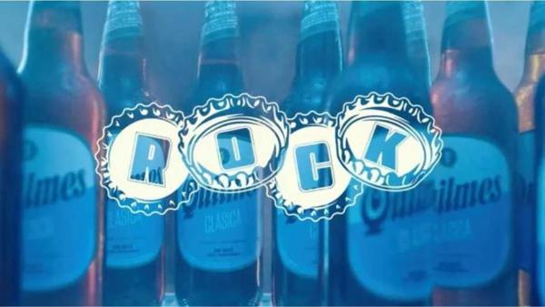
Iniciado en 2003 en las canchas auxiliares del estadio Monumental, su debut reunió a artistas consagrados nacionales como Luis Alberto Spinetta, Gustavo Cerati, Divididos, entre otros. Además de internacionales como Café Tacuba y Die Toten Hosen. Ademas muchos de los artistas que participaron en Quilmes Rock aprovecharon la visibilidad del festival para promocionar sus nuevos álbumes o CD.
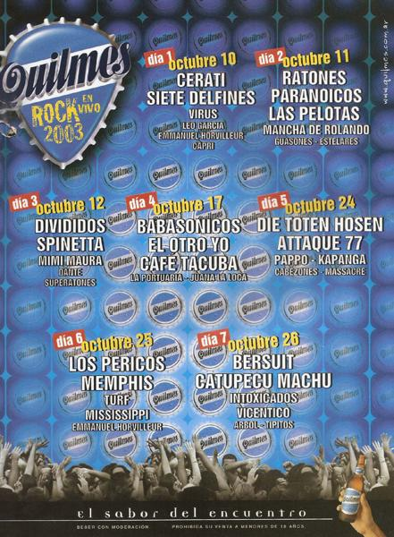
Actividad
2004
Esta vez el evento volvio con tres fechas en el estadio Monumental, comenzó a traer una mayor cantidad de grupos internacionales que marcarían una tendencia para las próximas ediciones. A varios grupos de nuestro país se les sumaron Evanescence, Aerosmith, Velvet Revolver, Keane y Bad Religion. Pero lo nacional volvería a marcar uno de los grandes momentos del festival cuando Divididos y Las Pelotas volvieron a tocar juntos canciones de Sumo.
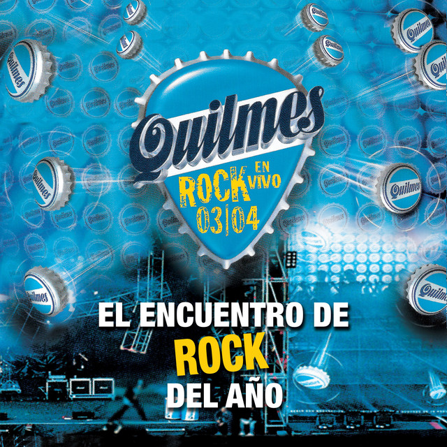
2009
Los conciertos se dividieron en tres lugares distintos: el estadio de Vélez, el Club Ciudady nuevamente en el Monumental.Las bandas se distribuyeron y además de contar con grandes grupos nacionales, los que más se destacaron ese año fueron: Iron Maiden , Kiss,Radiohead y Sepultura.
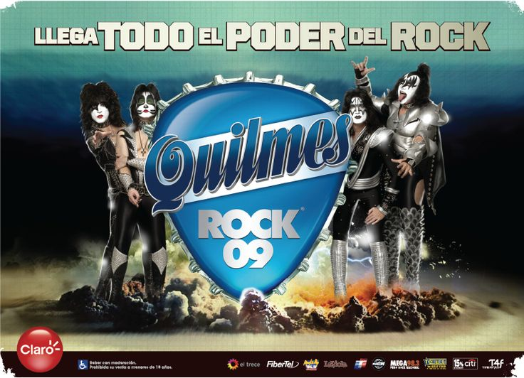
2010
En 2010 el festival se celebró en dos días y volvió a realizarse en el estadio de Núñez, donde en ambas fechas la banda encargada de cerrar fue Metallica.
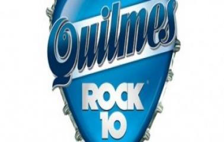
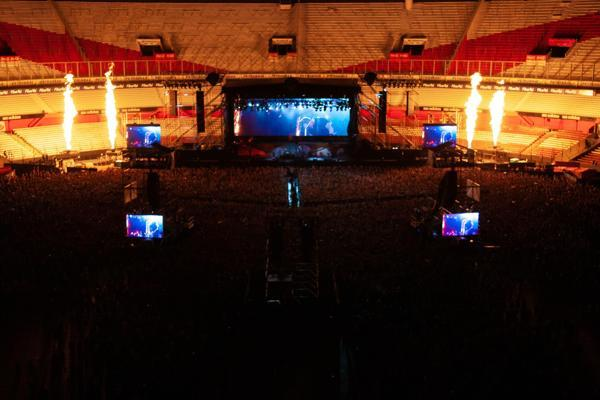
2011
La música internacional y local se fusionan en Quilmes Rock, mudándose a Geba, en donde tocaron artistas como Jack Johnson o Jamiroquai. Cerrando la noche de la fecha tres Babasónicos y Ciro y los Persas hicieron lo propio en la cuatro.
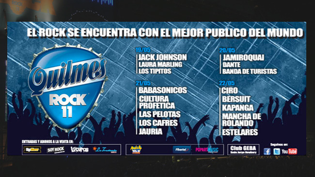
2012
El festival vuelve a el Monumental y fue encabezado por Foo Fighters y Arctic Monkeys. También participaron bandas como Cage the Elephant , Band of Horses, TV on the Radio, Crosses y Joan Jett and The Blackhearts junto a las nacionales, Jauría, Catupecu Machu y Massacre.
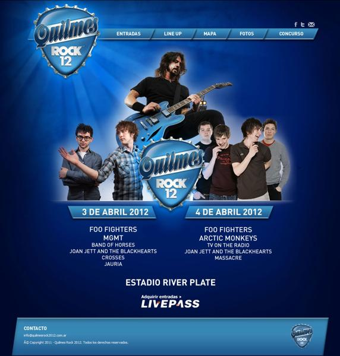
2013
En este año fue el último Quilmes Rock, que se realizó antes de un gran parate; esa vez fueron tres días en el predio denominado “Ciudad del Rock”, terreno ubicado en el ex Parque de la Ciudad. En aquella ocasión, Ciro y los persas, blur y Tan Biónica fueron los headliners.
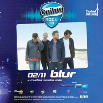
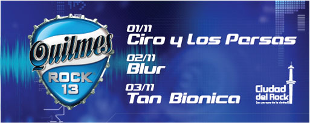
2020
Pasaron siete años hasta la vuelta del festival, en pleno confinamiento por la pandemia. Los shows se realizaron por streaming con conciertos grabados y conducidos por Bebe Contepomi. Durante dos días, más de 400 mil personas disfrutaron shows de Airbag,Juanse,Estelares, entre otros. Esto se organizó con el fin de recaudar dinero para las familias de músicos que se veían afectadas económicamente por el cese de los shows por la cuarentena.
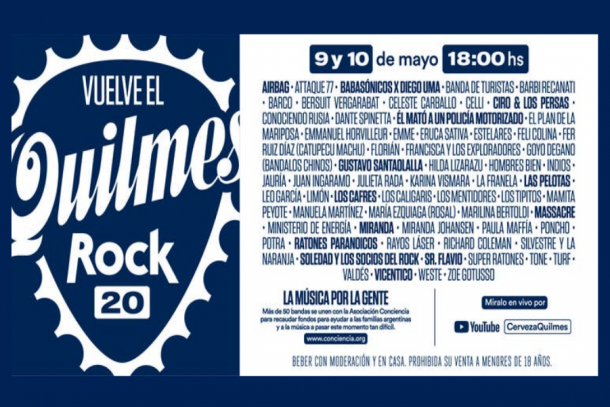
2022
El festival volvio con sus conciertos presenciales durante dos días en Tecnópolis, con Gorillaz encabezando el evento. Además, tocaron Bandalos Chinos, Conociendo Rusia, Catupecu Machu, El Cuarteto de Nos, y muchos más.
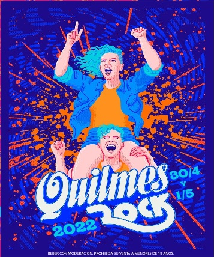
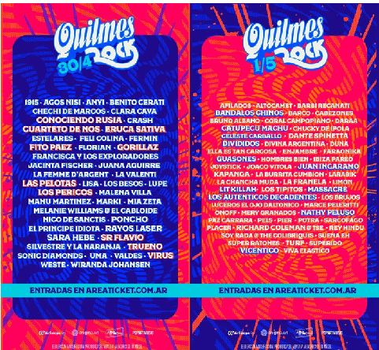
2025
En abril de este año, más de 150 grupos y solistas darán color a esta edición del festival, repartidos en cinco escenarios y artífices de diferentes lenguajes musicales, estilos y generaciones. Las jornadas estarán constituidas por cuatro fechas, repartidas en dos fines de semana.Esta edición coincide con la reunión de Los Piojos, quienes despedirán el festival. Para quienes no asistan los cuatro días o para los que viven fuera de Buenos Aires, Disney+ y Flow se repartirán las transmisiones.
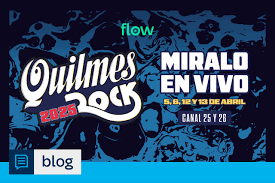
Momentos Destacados
Desde su inicio el Quilmes Rock ha sido testigo de momentos inolvidables en la historia del rock argentino.
2003
En el debut del festival de dio la aparición de Luis Alberto Spinetta junto a Divididos para interpretar "Despiértate nena" de Pescado Rabioso, un hito en la historia del festival.
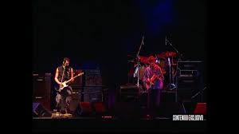
Spinetta y Divididos tocando juntos en el Quilmes Rock 2003
2004
El Quilmes Rock se trasladó al estadio de Ferrocarril Sarmiento y se extendió durante nueve días. Uno de los momentos más recordados fue la actuación de Charly García bajo una lluvia intensa, quien interpretó "Seminare", la canción más famosa de su banda Serú Girán.
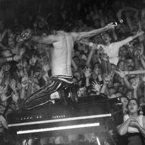
Charly Gracia cantando arriba de su piano durante una intensa lluvia.Quilmes Rock 2004.
LineUp 2025
Este fue el LineUp 2025 del Quilmes Rock, que se llevo a cabo el sábado 5, domingo 6, sábado 12 y domingo 13 de abril.